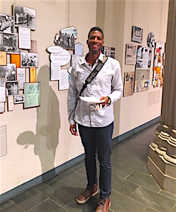

Dear Friends,
As the days shrink into long dark nights and the heightened activity of the holiday season accelerates time so that December seems fleeting, FOR staff and I pause to reflect and find peace by counting our blessings.
Wow -- 2015 was an incredible year!
Not only did the Fellowship of Reconciliation celebrate our 100th birthday, we also, with your support, continued to make strides toward a more just and peaceful world.
Look at what we did together:

Rev. Kristin Stoneking with Rev. Rick Ufford-Chase in front of the FOR Peace Tower. |
- We trained over 4500 activists in nonviolent civil disobedience in conjunction with the Black Lives Matter movement in Ferguson/St. Louis, Baltimore, Hartford, New York and most recently Minneapolis. Our on-the-ground team rapidly responded in critical moments, supported local leadership with resources for direct action organizing, and helped to build infrastructure to carry on the work.
- We launched the Campus Weekends pilot program for training a new generation in nonviolent social change. Student and mentor participants from the weekend continue to engage with FOR initiatives; and, a few weeks ago, we took the program on the road, staging the People's Campus Weekend at the 4th precinct encampments in Minneapolis, to protest yet another killing of an unarmed Black man, Jamar Clark.

Rev. Kristin Stoneking with Arun Gandhi at the FOR Centennial multifaith service. |
- A team from FOR was selected from among thousands of applicants to present on interfaith approaches in nonviolence at the Parliament of World Religions. Your commitment to nonviolence and reconciliation was well-represented by FOR as more than 10,000 faith leaders and activists at the Parliament struggled with the conflicts that currently plague us from climate change to mass incarceration and militarization.

Kyoko Iitaka, Ph.D., chairperson of FOR Japan, speaks at Centennial Gala while International FOR President Davorka Lovrekovic looks on. |
- At the invitation of Japan FOR, three young adults travelled to Japan to bear witness to FOR-USA's commitment to peace and solidarity as their treasured Article 9 which affirms that Japan will not resolve international conflicts with war is threatened by its current government. The delegation affirmed our commitment to a nuclear free world through their presence at the commemorations in Hiroshima and Nagasaki, and they've been engaged in community education since returning home.

Rev. Kristin Stoneking with Arun Gandhi at the FOR Centennial multifaith service. |
- We began monthly national conference calls this last fall for FOR chapters and affiliates to connect activists across the United States on issues such as police review boards, the death penalty, and Islamophobia. The calls also provide space for staff, National Council and volunteers to report back on FOR initiatives.
- In November, we opened the period of celebrating 100 years of persevering for peace with three days of events in New York. The events were well attended with FOR members and friends coming from all over the globe. The Centennial FOR documentary and retrospective exhibit will travel around the country for the next seven months and then our Centennial observances will culminate in a national conference at Seabeck, Washington next summer.
And throughout this period of celebration in which we've been savoring memories of FOR's illustrious 100 years, we've also been laying the groundwork to advance our efforts to create peace through the transformative power of nonviolence.

FOR Director of Campaigns and Strategy Anthony Grimes at the FOR Centennial exhibit. |
- We've fortified our interfaith bonds as we believe that the place of peace where all paths meet is the source of strength that sustains and guides us.
- We've sought new and dynamic voices and media platforms for the nonviolent narrative that we publish online and in print through Witness and Fellowship magazine in order to enliven and expand our outreach.
- We've strategically aligned our staff structure with our mission to organize, train, and grow a diverse movement for peace and nonviolent justice so that we are primed and ready to roll out exciting new campaigns and fresh programming that you will be hearing plenty about in upcoming days.
As you can see, our gratitude list is long, and at the top of that list is you for without you, none of our work is possible. Thank you for your unwavering faith and support.
Together we will persevere in the struggle until peace is the way of the world.
Please support FOR-USA with your end-of-year donation. Your tax-deductible donations help to make a more just and peaceful world possible.
May your holidays be full of hope and promise as we look toward a new year.
In deepest gratitude,
Rev. Kristin Stoneking
Executive Director
Fellowship of Reconciliation |